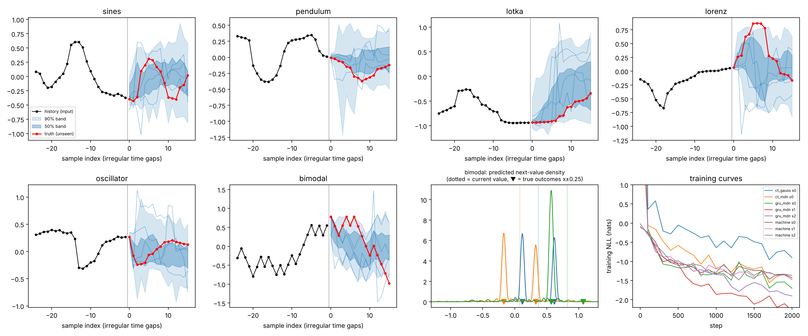

Sequence models begin with a learned table over a finite alphabet. We replace it with arithmetic. Each real number x is sent to b(x)k = pk−1/2 e2πi x√pk over the first R primes: no parameters, no table, defined on all of ℝ. The map is a homomorphism from (ℝ, +) into the torus, every input has the same norm, and the Gram matrix depends only on x − y.
On this basis we build a continuous machine: the input is a real number, the internal state is a bank of complex oscillators that advances by any real time gap Δt, and the output is a full probability density over the next value, |⟨b(x), h⟩|² / Z, whose normaliser Z has a closed form. There is no tokenizer, no embedding table, no attention, no feed-forward block and no positional encoding. Depth is a stack of reversible blocks.
The goal of this work is not a better language model. It is a different route to sequence cognition, with capabilities that token-based models do not have by construction. We implement every part of the design and verify it on a single 4-core CPU with no GPU. Six exactness properties hold to numerical precision. One machine of 112,769 parameters learns six continuous dynamical systems at once from irregularly sampled data, produces calibrated multi-modal densities, forecasts 16 steps ahead with uncertainty bands, runs in constant memory, and discovers an unstated boundary rule. We report where the substrate is strong and where it is limited, including a measured output-resolution limit, the result of a basis ablation, and the absence of content-addressable recall.
Attention charges twice: a T×T term at run time and a context length fixed at design time. The embedding table charges separately for the privilege of giving each token an arbitrary vector. A large literature makes the mixer cheaper (state-space models, long convolutions, linear attention). None of it changes the input: every one of these models still begins with a learned table over a finite alphabet.
What the input is. Here the input is ℝ. A byte, an audio sample, a temperature, a coordinate, a timestamp: each is already a point in the space, with no encoder, tokenizer or quantisation step. Giving a learned table real-valued input means learning an encoder; a learned encoder assigns arbitrary coordinates; and arbitrary coordinates cost the group law and the shared coordinate system that this construction provides for free.
Why continuity matters. Discrete models see the physical world through a quantiser chosen in advance. Sensor streams, irregular timestamps, mixed sampling rates and numbers themselves are all forced into symbols first. A model whose input, state dynamics and output all live on ℝ can meet these signals directly.
Position of this work. We do not compete with transformers on their own ground, and we do not claim to. The question we ask is different: what can a machine do when its input, its clock and its output are all continuous, and its representation is fixed arithmetic rather than learned lookup? We answer it with an implementation and measurements, not only a design.
Origin of the basis. The construction was motivated by the Euler product and the explicit formula, where primes enter as mutually incommensurable frequencies, each acting as an independent fingerprint. Section 2.6 shows that this link is concrete: the log-prime version of the bank recovers the first ten zeros of ζ.
Contributions.
Let p1 < … < pR be the first R primes and
Real and imaginary parts are stored side by side, so the working space is real of dimension 2R. Nothing in (1) is a parameter, and the argument is a real number, not an index. All measurements in this section use R = 2048 and float64 phases (exp_basis.py).
Proposition 1 (arithmetic inside the representation). b(a) ⊙ b(c) = A ⊙ b(a+c), with Ak = pk−1/2. Up to the frozen amplitude, b is a group homomorphism from (ℝ, +) into the torus. Proof: the exponents add. Measured over 500 random pairs in [−105, 105]: maximum absolute deviation 1.4×10−10, mean 4.5×10−13.
Proposition 2 (constant norm). ‖b(x)‖² = Σk pk−1 for every x, which by Mertens' second theorem is log log pR + M + o(1). Every input has the same amplitude profile, so identity is carried entirely by phase. Measured: 2.5436161509 across the whole byte alphabet, spread 8.9×10−16 (Mertens estimate 2.5429).
Proposition 3 (translation covariance). ⟨b(x), b(y)⟩ = Σk pk−1 e2πi(x−y)√pk, a function of x − y alone; the Gram matrix is Toeplitz. Measured at x − y = 7 over 200 random x: 0.41791083 ± 2.7×10−12, against the closed form 0.41791083. Relative position is a property of the map, not something added to it.
Proposition 4 (injectivity and continuity). b is continuous. The √pk are ℚ-linearly independent (Besicovitch), so the phase vector equidistributes on the torus and b is injective. Measured: 1 − cos between b(x) and b(x+δ) is 1.589×10−4 at δ = 10−4 and 1.589×10−10 at δ = 10−7, scaling exactly as δ².
Prime p contributes p−2σ to the squared norm. For σ > 1/2 the shares by decade fall geometrically and a few small primes become the whole carrier; for σ < 1/2 the largest primes swamp everything. At σ = 1/2 the shares fall harmonically and the total diverges only as log log. The carrier is placed at that boundary and frozen there.
| share of ‖b‖² by decade | [10, 10²) | [10², 10³) | [10³, 10⁴) | [10⁴, ·) |
|---|---|---|---|---|
| σ = 0.40 | 0.211 | 0.215 | 0.247 | 0.070 |
| σ = 0.50 | 0.246 | 0.155 | 0.112 | 0.024 |
| σ = 0.60 | 0.223 | 0.087 | 0.039 | 0.006 |
The harmonic profile has a cost that must be stated. The effective number of independent coordinates, (Σ Ak²)² / Σ Ak4, is 14.3 at R = 2048, because the first primes carry most of the weight. Two consequences follow and are measured below: different inputs are less orthogonal than 2R suggests (mean |cos| between distinct bytes 0.24), and superposition capacity is small (Section 5.6). A flat amplitude (σ = 0) restores the full dimension; the model can also learn per-channel gains, so the trunk is not limited by this, but any parameter-free readout is.
Since the readout is parameter-free, a disjoint family of indices costs nothing to add. Action tokens written as type·105 + index occupy their own region of ℝ. Because of the effective dimension above, regions are separated by phase pattern, not by orthogonality: the maximum |cos| between 64 action codes and the 256 byte codes is 0.52, comparable to the 0.24 mean between bytes themselves. Separation must therefore be learned or obtained with σ = 0; it is not free at σ = 1/2.
Propositions 1–4 depend only on the frequencies being ℚ-linearly independent, not on their being √p. This makes the frequency family an experimental variable: √p (this paper), log p (Section 2.6), random reals, geometric (RoPE-like). Section 5.5 measures them.
Binding is elementwise product and unbinding is the conjugate, as in vector-symbolic architectures, but the product of two codes is again a code: b(k) ⊙ b(v) ∝ b(k + v). Keys must therefore be spaced so that ki + v ≠ kj + vj within the value range; dense integer keys alias. With well-separated keys this is a strength: the bound pair is itself a point of ℝ.
Take frequencies log pk instead of √pk:
This is the Euler-product term of ζ(s) on the critical line Re s = 1/2. Propositions 1–3 hold unchanged (measured deviation 1.2×10−13), and ℚ-independence of the log pk follows from unique factorisation. For integer inputs a multiplicative channel n ↦ (e−i vp(n) log p)p turns multiplication of integers into addition of phases; measured over 200 random products, deviation 6.5×10−16.
The bank recovers the zeros of ζ. The tapered prime-power bank S(t) = −Σpk≤X log p · p−k/2 (1 − log pk/log X) cos(t k log p), with X = 2×106, has its ten tallest peaks on t ∈ [12, 50] at
| true zero γ | 14.1347 | 21.0220 | 25.0109 | 30.4249 | 32.9351 | 37.5862 | 40.9187 | 43.3271 | 48.0052 | 49.7738 |
|---|---|---|---|---|---|---|---|---|---|---|
| peak of bank | 14.160 | 21.030 | 25.020 | 30.420 | 32.930 | 37.590 | 40.920 | 43.330 | 48.010 | 49.770 |
Table 1. All ten zeros found, maximum error 0.025 (grid step 0.01). This is a property of the log-prime basis through the explicit formula, not of a trained model.
Depth. Each layer is a reversible block: y1 = x1 + F(x2), y2 = x2 + G(y1). The block is invertible whatever F and G are. Inside F and G act a time mixer, a circulant phase filter with frequency response eiθk (unitary by Parseval), and a spectral operator W = U diag(eσ) VT with U frozen orthogonal and V initialised to U, scaled by a per-channel gate α initialised to zero, so every layer is born as the identity and learns a perturbation. The only nonlinearity is multiplicative: F(x) = α ⊙ W(Pθ(M(n)) ⊙ silu(n)), n = rms(x), where M is the time mixer.
Time mixer, discrete version. A causal per-channel convolution with kernel length K and fixed envelope ζj = (j+1)−1/2, evaluated by FFT in O(T log T). No T×T object is formed. Note that L stacked layers have a receptive field of L·2(K−1)+1 samples, so the state used for generation is a sliding window of the last K inputs per layer: constant in sequence length, but a window.
Time mixer, continuous version. The kernel is a sum of complex exponentials, κ(t) = Re Σm cm e(−λm+iωm)t. Its state obeys
so the state advances by any real Δt, can be queried at any future offset q, and has size O(channels × modes) independent of sequence length: a true recurrent state, not a window. Training uses an exact chunked scan; generation uses (3) one sample at a time.
What the machine is. An input is a bank of oscillators: by (1), x excites R phasors at frequencies √pk. The operators are all-pass phase filters and orthogonal maps. Reading out matches phase against the same frozen bank.
The readout is already phase matching, s(x) = ⟨b(x), h⟩ = Σk hk Ak e−2πi x fk, a sum of R sinusoids and therefore a function on all of ℝ. The next-value density on a window [a, c] is
Every term of Z is a closed-form sinc, so Z = hT G h̄ with a frozen Hermitian matrix G. The density is non-negative by construction and integrates to one exactly (measured: numerical integral 1.0000000 ± 10−7). Training minimises −log q(xtrue | h). The head has no parameters and no output vocabulary: the same head emits a byte, a sample, a temperature or a coordinate.
The density can only be as sharp as the highest frequency allows (resolution ≈ 1/fmax), and it can only be localised if neighbouring frequencies are close enough that the pattern does not repeat inside the window (coherence length ≈ 1/Δf). For √p at unit scale the spacing is too coarse for a long window: the best possible fit to a Gaussian of width 0.3 on a window of length 12 leaks 74% of its mass into replicas. A fixed affine rescaling of the input fixes this. The table gives the excess negative log-likelihood (nats) over the target's entropy for the best least-squares fit, R = 128:
| input scale | width 0.3 | width 0.1 | width 0.03 | regime |
|---|---|---|---|---|
| 1 | 2.14 | 2.34 | 1.98 | aliasing dominates |
| 1/4 | 0.70 | 0.47 | 0.47 | |
| 1/8 | 0.27 | 0.34 | 0.80 | balanced (used) |
| 1/16 | 0.13 | 0.32 | 1.24 | resolution dominates |
Table 2. Design rule: choose the input scale so that 1/Δf exceeds the window and 1/fmax is below the narrowest density needed; increasing R improves both (R = 512 at 1/8: 0.26 / 0.33 / 0.38). Source: exp_head_capacity.py.
The following hold for the implemented machine and are checked by an automated test suite (tests/test_machine.py, 6/6 passing):
| property | what it means | measured |
|---|---|---|
| group law | arithmetic happens inside the representation | deviation < 10−3 in float32 storage, 10−10 in float64 |
| normalised density | output is a true probability density | ∫q = 1 to 10−6, q ≥ 0 |
| streaming = full pass | sample-by-sample operation equals whole-sequence operation | relative difference < 10−5 |
| constant state | memory does not grow with sequence length | identical state size after 10 and 1000 samples |
| time semigroup | advancing by a then b equals advancing by a + b; querying at offset q equals advancing by q | difference < 10−5 |
| uses time | the same values at different times give different predictions | relative change > 10−3 |
One machine is trained on six signal families at once, each sequence drawn with fresh random initial conditions. Five of the six are sampled at irregular times; time units and sampling rates differ between families by design. At each step the machine sees the value, the time since the previous sample, and the time to the sample it must predict.
| family | dynamics | sampling |
|---|---|---|
| sines | three random sinusoids + noise | irregular, mean gap 1.0 |
| pendulum | non-linear pendulum | irregular, mean gap 0.25 |
| lotka | Lotka–Volterra predator–prey | irregular, mean gap 0.35 |
| lorenz | chaotic Lorenz system | irregular, mean gap 0.04 |
| oscillator | random damped oscillator | irregular, mean gap 0.35 |
| bimodal | x → x ± 0.25 with reflection at ±1 | regular |
Machine. R = 128, input scale 1/8, 3 reversible layers, 4 oscillator modes per channel, phase-amplitude head on the window [−1.5, 1.5]: 112,769 parameters. Trained for 2000 steps of 24 sequences × 64 samples, three seeds; evaluation on 96 unseen sequences per family, identical for every model.

Negative log-likelihood (NLL, nats) and continuous ranked probability score (CRPS) on unseen sequences; lower is better. "Persistence" is a no-learning reference: the next value is the current one plus Gaussian noise with a per-family width fitted on training data. The same oscillator trunk is also trained with two learned output heads (Gaussian, and a mixture of five Gaussians, MDN), and a standard GRU with an MDN head is included as an external reference.
| machine (parameter-free head) | same trunk + Gaussian head | same trunk + MDN head | GRU + MDN (reference) | persistence | |
|---|---|---|---|---|---|
| mean NLL | −1.347 ± 0.028 | −0.753 | −1.416 | −1.878 ± 0.305 | −0.397 |
| mean CRPS | 0.0646 ± 0.0010 | 0.1064 | 0.0709 | 0.0591 ± 0.0059 | 0.0913 |
| 16-step CRPS | 0.168 ± 0.006 | 0.167 | 0.149 | 0.155 ± 0.014 | — |
| bimodal NLL | −1.837 ± 0.016 | +0.441 | −1.039 | −1.221 ± 1.197 | +0.034 |
| bimodal CRPS | 0.116 ± 0.001 | 0.226 | 0.144 | 0.136 ± 0.014 | 0.151 |
| parameters | 112,769 | 113,282 | 116,623 | 81,615 | — |
Table 3. Machine and GRU: mean ± std over three seeds; other rows one seed. Per-family results: runs/machine/summary.txt.
What the table shows.
On irregularly sampled damped oscillators, three otherwise identical models differ only in how they treat time (one seed):
| time handling | NLL |
|---|---|
| continuous state advanced by the true Δt, queried at the true offset q (equation 3) | 0.648 |
| fixed step, Δt and q given as extra input features | 0.705 |
| fixed step, timestamps ignored | 0.799 |
Table 4. Treating time as a continuous variable of the dynamics beats treating it as a feature. Source: exp_continuous.py --part time.
Language is not the purpose of the construction, but bytes are a hard discrete domain and show that the substrate carries it. Two sets of measurements exist.
Large checkpoint (author's measurements). An early-stage checkpoint of 797,540,809 parameters (76 layers, d = 4096, R = 2048) reached a three-domain held-out average of 2.0663 bits per byte after 84,000 steps (from 2.2152). Per sample: English prose 1.830, Python source 0.744, JSON 2.731. On uniform random bytes it scored 8.712; a calibrated model scores 8.000, so the excess measures over-confidence on noise, and calibration is a target for further training. Invertibility through 76 layers: 5.2×10−3 relative error in float32. Streaming agreed with the full pass to 6.5×10−7; the 304 MiB generation state equals 76 × 512 × 2048 × 4 bytes, i.e. the sliding-window state of Section 3. Phase adaptation (θ, σ, α; 467,248 parameters, 0.059%) gave −0.527 bits per byte against −0.402 for tuning the dense operator (83,886,080 parameters).
Small-scale replication (CPU). A 2,107,905-parameter model (8 layers, d = 512, R = 256) trained for 3000 steps on Shakespeare, Python standard-library source and JSON files reached 1.78 bits per byte held-out (prose 2.40, code 1.97, JSON 0.97). Invertibility is exact in float64 and 8.9×10−3 in float32; phase filters preserve norm to 10−6; streaming equals the full pass (relative 1.2×10−6, identical argmax on every position); the model runs unchanged at 8× its training length. Weight averaging of two branches fine-tuned from one checkpoint gave 1.792 against 1.827 for the better branch. A phase-only adapter (0.49% of parameters) obtained 84% of the gain of tuning the dense operator (50% of parameters) on a new domain.
Same architecture (R = 128, 6 layers), same data and budget, three seeds each; held-out bits per byte, lower is better:
| input representation | bits per byte |
|---|---|
| learned 256 × 2R table | 2.156 ± 0.022 |
| random frequencies | 2.340 ± 0.030 |
| log p (zeta variant) | 2.343 ± 0.018 |
| geometric (RoPE-like) | 2.370 ± 0.016 |
| √p with flat amplitude (σ = 0) | 2.412 ± 0.041 |
| √p, σ = 1/2 | 2.449 ± 0.025 |
Table 5. On a finite alphabet, where every symbol is seen many times, a learned table is better. Among frozen families the choice matters by about 0.1 bits per byte and √p is not privileged. The value of the frozen basis lies elsewhere: it is defined on all of ℝ, needs no training to cover unseen values, and carries the group law; none of these is available to a table.
Superposition capacity. N key–value bindings are summed into one vector and each value is recovered by unbinding with its key and phase-matching against the byte alphabet (exp_binding.py):
| bindings stored | 4 | 8 | 16 | 32 | 64 | 128 |
|---|---|---|---|---|---|---|
| R = 2048, σ = 1/2 | 0.73 | 0.34 | 0.15 | 0.09 | 0.04 | 0.02 |
| R = 2048, σ = 0, separated keys | 1.00 | 1.00 | 1.00 | 1.00 | 1.00 | 0.997 |
Table 6. Recovery accuracy. With flat amplitude and well-separated keys the basis is a high-capacity symbolic memory (128 bindings at 99.7%); at σ = 1/2 the effective dimension of Section 2.2 limits it to a few items. A single write followed by an erase is exact (error 0 in float64).
Content-addressable recall. On multi-query associative recall (key–value pairs followed by queries), the attention-free oscillator model stays at chance after 5000 steps, while a small transformer reaches 41% with four pairs. Retrieving by content is the function attention provides, and this architecture does not provide it; it is a different capability profile, not a weaker version of the same one.
Robustness. Zeroing half of all weights costs 10.4 bits per byte and removing one of eight layers 1.17 at small scale, so information is distributed but not redundant. Adapter composition (adding two phase adapters trained on different domains) did not preserve either skill at this scale; subtraction is exact (10−7).
What this machine can do that token models cannot by construction.
Where it is limited. Output sharpness is bounded by the highest frequency (Section 4.2); content-addressable recall is absent (Section 5.6); on finite alphabets a learned table is a better input than any frozen family (Section 5.5); the σ = 1/2 amplitude profile reduces orthogonality and symbolic capacity (Section 2.2). Each limit has a concrete lever: R and input scale for sharpness, a recall mechanism added alongside the oscillator state, σ for symbolic capacity.
Why the CPU matters. All results here come from a few CPU-hours. The machine's cost grows linearly with sequence length, its state is constant, and its basis needs no training. This puts continuous sequence modelling, for sensors, finance, physical systems and irregular event streams, within reach of hardware that has no accelerator.
The phase x√pk reaches about 107 rad at x = 105 and p ≈ 17,000; float32 phase carries roughly 1 rad of error there. Compute frac(x√pk) in float64, then cast to float32. "No encoder" means no learned encoder: a fixed affine rescaling remains, and Section 4.2 gives the rule for choosing it. The continuous-time scan bounds decay rates (λ ≤ 4) so that the chunked log-space evaluation stays in range; it agrees with the sequential recurrence to 3×10−7.
A frozen arithmetic basis supplies identity, relative position, continuous values and a group law at no parameter cost. On it we built a machine whose input, clock and output are all continuous: a bank of oscillators with a state, not a lookup-and-mix pipeline. It is implemented, its exactness properties are tested, and on a CPU with no accelerator it learns six continuous dynamical systems in one model, predicts multi-modal futures, and discovers an unstated rule of its world. Its limits are measured and each has a concrete lever. The construction is offered not as a better version of existing sequence models but as a different one.
Hardware: 4 CPU cores, 15 GB RAM, no GPU. Software: Python 3.13, PyTorch 2.15 (CPU), NumPy. Commands, from the repository root:
| result | command |
|---|---|
| exactness tests (Section 4.3) | python3 -m pytest -q tests |
| basis properties, zeta zeros (Section 2) | python3 exp_basis.py |
| head capacity (Table 2) | python3 exp_head_capacity.py |
| continuous world (Tables 3, Figure 1) | ./run_machine.sh; python3 plot_machine.py en |
| continuous time (Table 4) | python3 exp_continuous.py --part time |
| byte model (Section 5.4) | python3 data/build.py; python3 train_lm.py --out runs/main; python3 exp_props.py |
| adapters, merging | ./run_after_main.sh |
| basis ablation (Table 5) | ./run_ablation_seeds.sh |
| binding capacity (Table 6) | python3 exp_binding.py |
| recall | python3 exp_recall.py 2 5000 prime; python3 exp_recall.py 2 5000 transformer |
Implementation choices not fixed by the design: the multiplicative gate inside F and G (the only nonlinearity); a learned scalar temperature and 2R-dimensional output gain for the discrete readout (513 parameters); input scale 1/8 for the continuous machine; four oscillator modes per channel.